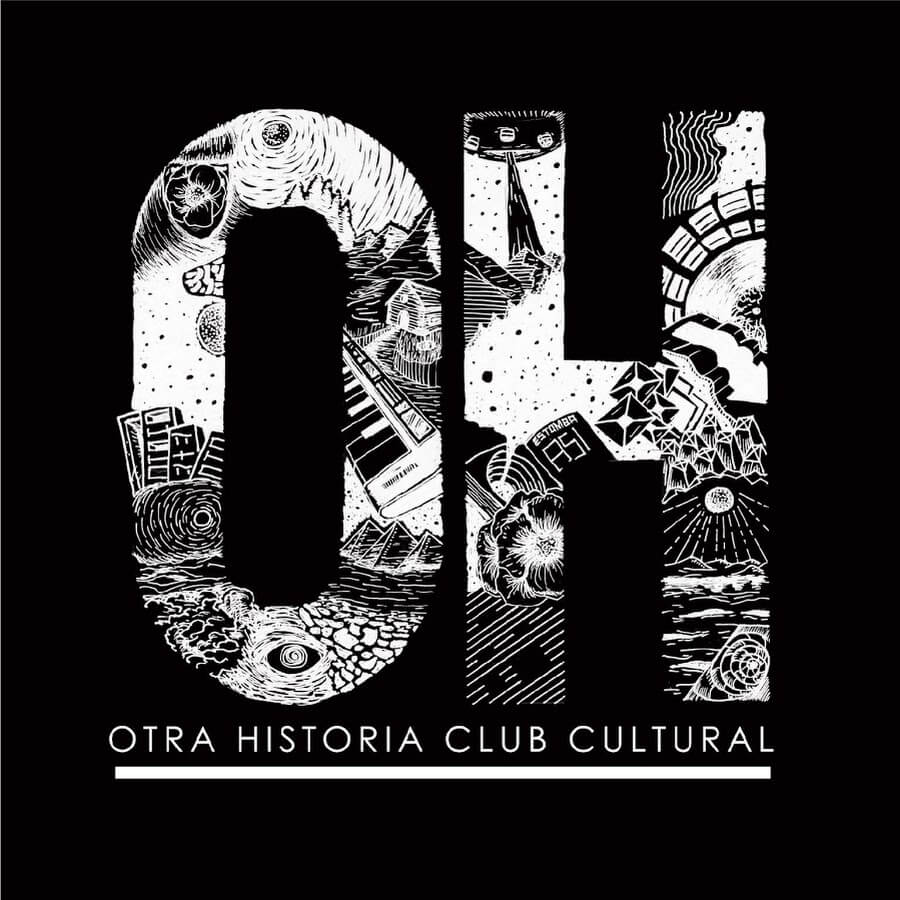

Otra Historia es un centro cultural ubicado en Villa Ortúzar, CABA donde se desarrollan muchas y diversas actividades que convergen entre sí. Entre ellas podes encontrar festivales, ferias, seminarios, exposiciones y hasta obras teatrales. Querés saber más? Segui a Otra Historia en sus redes!